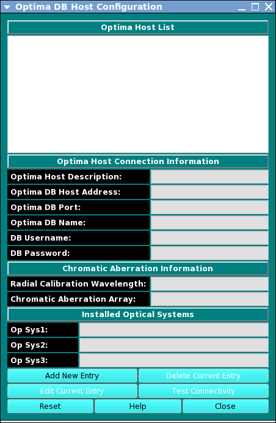
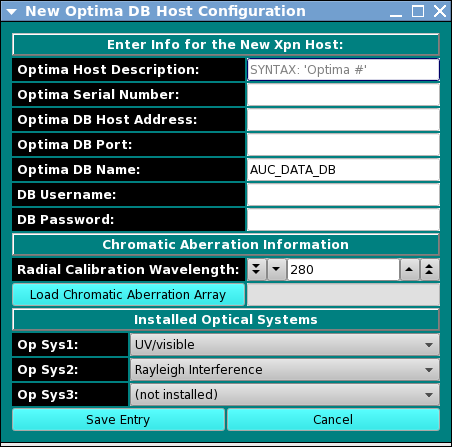
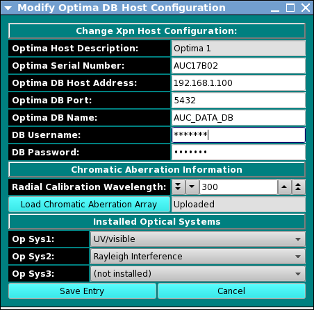

Manual
Manual
Manual
Manual
Note: Whenever UltraScan needs to use an Optima host entry, it needs the user's master password. The first time it is needed, it will prompt for it and save it in memory, but not on disk storage. When needed again, UltraScan uses the stored password. Before this can be done, the master password needs to be set up and a cryptographic hash of the password stored. Use the Master Password panel, accessed from the main configuration panel, to set up or change the master password.

The optima host configuration panel allows you to configure the connection to one or more Optima instruments in your lab. Here you can enter the description, host address and port of the Optima instrument, as well as Optima database name, user name, and password. Additional information includes a radial calibration wavelength, a file from which to upload a chromatic aberration array, and installed optical systems.
When Add New Entry or Edit Current Entry is selected, one of the following dialogs is opened:


For appropriate Optima Host values, consult with your administrator or with the authors of this software.
To delete an entry, select it and click on Delete Current Entry.